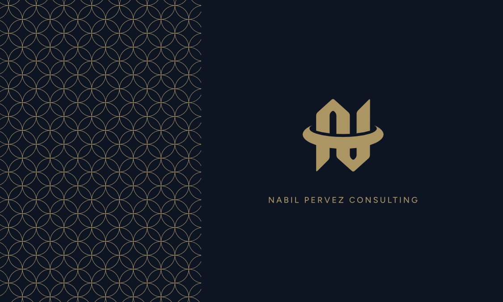
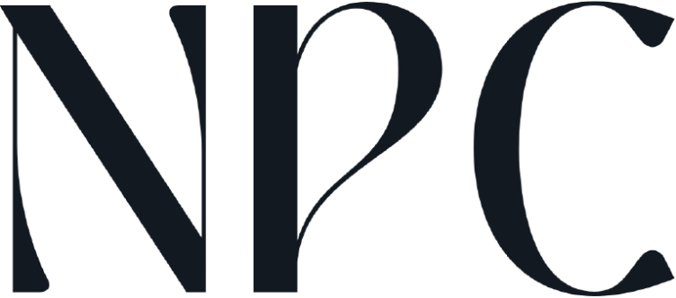

Let's build something worth referring.
On the brand card the pattern fills the left third against a completely clear right side. That contrast is the point — content sits on the calm side.
Start a ConversationNPC sells senior judgment to two audiences at once — organizations and individuals. The visual language has to read credible to a Fortune-500 marketing VP and aspirational to a mid-career professional. It does that with one move: near-black cool navy ink, one champagne-gold accent, high-contrast serif display type, and hairline structure. Editorial luxury rather than SaaS.
Cool navy-black ink — #07101F on screen, #0D1522 on brand artwork, #131921 in print. Flat, with a fixed 4% fractal-noise grain so it never reads as a default dark mode.
Champagne gold. #DDB84A on screen, #AB9563 — the measured brand champagne — in print and every mark. No third hue. No blues, greens, or semantic red/amber/green.
The geometric pattern — interlocking champagne circles. Used once per view: a full-bleed band or a split panel. It reads as luxury only because most of the ink is doing nothing.
Text is #E2EAF4 at full strength and #5E718F muted — and the muted grey carries most of the body copy, which is why the pages read quiet. Emphasis promotes words to full-strength text or to gold, never to a larger size. Light theme inverts to paper with a darker gold that passes AA; the print identity lives in light, so the two modes are equal citizens. Toggle the theme in the nav to check both.
ink-950 screen ground · ink-880 brand-card ground · ink-800 print master · ink-500 carries the body copy
gold-300 screen brand gold · gold-500 champagne print master, measured off the lockup + pattern artwork · gold-700 light-theme gold, AA on paper · gold-800 the only gold that passes AA for marks on paper
Gradient is reserved for gold fills and gold text — never a decorative background gradient, never a hue shift.
Three faces, strictly separated by job. The root font size is 15px, not 16 — every rem token assumes it. Wide uppercase letterspacing is the loudest brand tell: if a design feels off-brand, it is usually because a label is set tight.
Weight 300 at display sizes with −1px tracking; 600 uppercase at 2.5px for section heads. Italic is the brand's emphasis device.
300 for long paragraphs, 500 for inline emphasis, 600–700 for buttons and stat numbers.
Prata stands in for the supplied wordmark face, which is not on Google Fonts. Close in contrast and spirit; not the same terminals.
Flat ink, plus a fixed fractal-noise overlay at 4% opacity across the whole page — that grain is what keeps the flat dark from looking default. The geometric pattern is the one ornament: interlocking champagne circles, tiled from a seamless 303×303 crop. Use it once per view.
On the brand card the pattern fills the left third against a completely clear right side. That contrast is the point — content sits on the calm side.
Start a Conversation--pattern-opacity 0.22 on ink for bands and split panels · --pattern-opacity-subtle 0.08 behind copy · on paper it flips to a near-print 0.85 champagne-on-white.
The lattice must read as fine texture, not as large graphic circles. Tile sizes: 56px cards · 88px default · 132px full-viewport heroes only.
Fixed 1100px content column, 40px page padding (22px on mobile). A two-column 1fr / 260px grid with a 52px gutter and a sticky sidebar. Fixed glass header at 62px. Section rhythm is 56px.
A single breakpoint at 860px collapses to one column and reorders stats and skills above the main content. A second at 520px drops the stat grid to 2-up. Utility FABs sit fixed bottom-right at 32px inset.
Inherited verbatim from the résumé build — not a 4px grid. Don't round these to a system.
Everything is separated by 1px rgba(220,180,80,.20) — a gold-tinted hairline, never neutral grey. On hover it strengthens. The one heavier rule in the system is the 2px solid gold left border on lead paragraphs.
--bg-card fill, 1px gold hairline, 10px radius, and no shadow at rest. Depth is exclusively a hover signal. That flatness is deliberate — the pages read as a printed document until you touch them.
Outer only; no inset shadows anywhere. --shadow-card on images and hero frames; a deep shadow plus a 1px gold ring on hovered cards; a single coloured shadow — a gold glow at 35% — on hovered FABs.
Exactly two places: the fixed nav (blur(18px) saturate(160%)) and the FABs. Never on cards, never on modals.
One curve for everything: cubic-bezier(.4, 0, .2, 1). No bounces, no springs, no overshoot, no parallax. Everything fades and translates a short distance. prefers-reduced-motion kills all of it, globally.
Hover any card below. Its siblings drop to 0.28 opacity; the hovered card lifts −2px, scales 1.012, gains the gold border and deep shadow, and a diagonal champagne shine wipes across it. Bolded metrics turn gold. Nothing else on the page moves.
Directed award-winning campaign with pop-up shops. 10M+ impressions, 10k+ attendees.
Built the 4th most connected TikTok account from scratch. 45M views in 4 months.
High-impact advertising campaign across social. 2.2M reach at 50% industry cost.
First person singular, addressed to "you." Nabil writes as himself, not as a company. Confident, plain-spoken, allergic to buzzwords while operating in a buzzword industry. Warmth without softness — nothing is oversold, because the numbers are doing the selling.
The single strongest habit in the copy. Not "scaled the agency" but "$5M portfolio, 90% client referral rate." When you write new copy, find the number or don't make the claim.
Experiential / Houston Outlaws / Directed award-winning campaign with pop-up shops. / 10M+ impressions, 10k+ attendees.
"Creativity without process is just chaos." "Stop being filtered out." "Marketing is now a technical discipline." State the uncomfortable thing, then the fix.
Riot Games, LEGO, Coca-Cola, Paramount Pictures, T-Mobile. Client names do work that adjectives can't; the copy leans on them rather than on words like "world-class."
Sentence case for sentences. Title Case for headings and division names. ALL CAPS only as a typographic device — eyebrows, nav, buttons — never as emphasis inside a sentence.
The only non-alphabetic glyphs in use are the gold ★ on awards, the — em-dash bullet marker, and ↗ on outbound links. Middle dot · separates metadata.
The system is Feather / Lucide, inlined as stroke SVG — fill: none, stroke: currentColor, stroke-width: 2, round caps and joins.
Sizes: 13px inside buttons, 17–18px in FABs and contact rows, 20px on division cards. Never larger — icons never become illustration. Colour is always currentColor. No icon font, no sprite sheet, no PNG icons. Never draw a client logo.
No logo was invented for this system. Every mark composes the supplied artwork — the N glyph, the serif "NPC" monogram, and the "NABIL PERVEZ" wordmark — inside containers that are geometry from the existing system.

The N glyph above "NABIL PERVEZ CONSULTING" in widely letterspaced Outfit — the primary signature. In the type variant, "CONSULTING" is measured at runtime and letterspaced to span the exact width of "NABIL PERVEZ", justified between the N and the Z.





| Tone | Hex | Ground |
|---|---|---|
| gold | #AB9563 | The print champagne and the master. Safe on both light and dark. |
| gold-bright | #DDB84A | Dark grounds — reads livelier than champagne on ink. |
| gold-deep | #8A5C08 | Light grounds. The only gold that passes AA on paper. |
| paper | #E2EAF4 | Knockout on ink or a dark photograph. |
| white | #FFFFFF | Knockout where full contrast is wanted — a gold band, a dark image. |
| ink | #131921 | Anything sitting on a gold fill — the chip variant, foil sims. |

Warm, not cool. The portrait is shot in tungsten light — amber bokeh, deep shadow, a tan-and-caramel palette. That warmth is what makes photography sit naturally next to champagne gold; a cool or blue-graded image would fight the palette.
Frames: 10px radius, 1px gold hairline, --shadow-card, object-fit: cover. Never tint an image gold. Never put type directly on a photo without the bottom-up ink protection gradient.
Nineteen components across four families, exposed on window.NPCDesignSystem_2f0ecd. Every family has a counterpart in the sources — the résumé, the site copy, or the wordmark asset. The recreations below are built in plain HTML from the same tokens.
Define your corporate identity, refine your brand voice, and build a legacy that resonates with your audience.
Explore Company BrandingCreatives hate "process," but they need it to scale. How to use Scrum/Agile to manage design and marketing.
Led ITSM teams. Reduced ticket time from 24h to 8h.
Three click-through routes: home (hero + trusted-by + divisions), speaker profile (hero + story + six keynote cards), case studies (discipline filter + grid).
Faithful recreation of the résumé repo — the ground truth — including hover isolation, the shine sweep and the live light/dark toggle.
Also in the repo: 23 foundation specimen cards under guidelines/, the MarketingPage template, and reference/resume-source.html — a verbatim copy of the upstream repo. Anyone with access should read that repo directly; it is the most complete expression of the brand in code.
Things to fix with real assets. This system was built from the résumé repo, a business-card PDF, five artwork files and the site copy — some of it is honest substitution.
type variant's N→Z justification is measurement-driven, so it survives dropping in the real face — only the letterforms change..woff2 files into assets/fonts/ and rewrite one file to make the system self-contained and offline-capable.